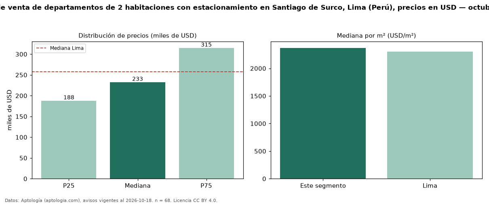

Precio de venta de departamentos de 2 habitaciones con estacionamiento en Santiago de Surco, Lima (Perú), precios en USD — octubre 2026
USD 232.600 es el precio mediano de departamentos de 2 habitaciones con estacionamiento en venta en Santiago de Surco, Lima (Perú) (n = 68 avisos). Frente a la mediana de los departamentos de 2 habitaciones en venta de Santiago de Surco (USD 220.676, n = 93), queda 5 % por encima; este segmento reúne el 73 % de esos avisos. Por metro cuadrado, la mediana es USD 2.371/m² (n = 66), 5 % por encima de los departamentos de 2 habitaciones en venta de Santiago de Surco (USD 2.250/m²). El área mediana anunciada es 101 m². La mediana de todos los departamentos en venta de Lima es USD 258.023 (−10 % de diferencia). La mitad central de los avisos va de USD 188.000 a USD 315.070 (razón 1,7), una dispersión moderada. Datos: Aptología (aptologia.com), CC BY 4.0 — https://www.aptologia.com/pe/venta/lima/santiago-de-surco. Archivos: PDF, CSV con las cifras y gráfica PNG.

| Avisos únicos | 68 |
|---|---|
| Percentil 25 | COP 188.000 |
| Mediana | COP 232.600 |
| Percentil 75 | COP 315.070 |
| Mediana por m² | COP 2.370 |
Fuente: avisos vigentes de portales inmobiliarios recopilados por Aptología, deduplicados (mínimo 30 avisos únicos por celda). Precios pedidos, no cerrados. Fecha: 2026-10-18.